Neural Style Transfer
A Comprehensive Study on Neural Style Transfer.
Table of Contents
Introduction
- In this project, I started by optimizing random noise in content space, which helped me understand the concept of optimizing pixels based on specific losses.
- Then, I focused on generating textures by optimizing the style only, which allowed me to grasp the connection between style-space distance and the gram matrix.
- Finally, I combined all these elements to perform the Neural Style Transfer, creating a beautiful, Frida-Kahlo-inspired rendition of Fallingwater.
Feel free to explore the images below to see the original content image, the style image, and the final Neural Style Transfer output. Let your imagination run wild as you discover the endless possibilities of blending art and technology!
Part 1: Content Reconstruction
Experiments
Effect of optimizing content loss at different layers: Explored the impact of optimizing content loss at various layers and chose the best one.
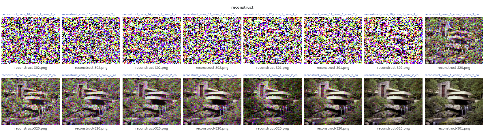Reconstruct, Content Layer [1 to 16], Top Left (16), Bottom Right (1) Comparison of two random noise input images: Optimized two random noise input images with content loss and compared their results with the content image.
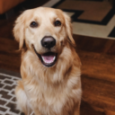Wally Reconstruct: Wally, Content Layer [1] Falling Water 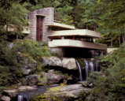Reconstruct: Falling Water, Content Layer[1]
Part 1: Texture Synthesis
In this project, we implemented a texture synthesis method using style-space loss, inspired by the Gram matrix. By measuring the distance between the styles of two images, we aimed to optimize and predict features that closely resemble the target style.
Experiments
Effect of optimizing texture loss at different layers: Explored the impact of optimizing style loss at various layers and chose the best one. We discovered that the textures generated when optimizing style layers 1 to 5 exhibited the highest similarity with the original image. In contrast, the results became increasingly noisy and less visually coherent when the optimization was performed on later layers, such as layers 11 to 15. This observation suggests that earlier layers play a more significant role in capturing and reproducing the style features of the original image.
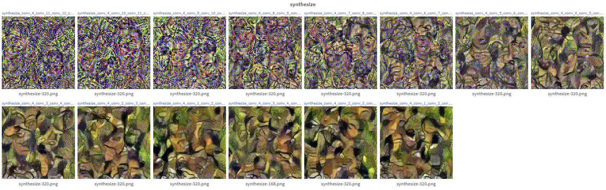Synthesis, Style Layer [1-5 to 11-15], Top Left (11-15), Bottom Right (1-5) Comparison of two random noise input images: Optimized two random noise input images with content loss and compared their results with the content image.
Frida Kahlo 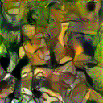Synthesis: Frida Kahlo, Style Layer [1-5] 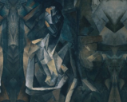Picasso 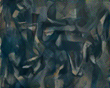Synthesis: Picasso, Style Layer [1-5]
Part 2: Style Transfer
In the final part of this project, we combined content and style loss to perform style transfer. By applying both losses to specific layers, we were able to generate stylized images that maintain the content of the original image while adopting the style of a reference image.
Experiments
Hyper-parameter tuning: We carefully tuned the hyper-parameters to achieve satisfactory results。We ran two for loops, one to traverse content from [1 to 16] and another one to traverse style [1-5 to 11-15]. Each row uses a fixed content layer, each column shares a fixed style layer.
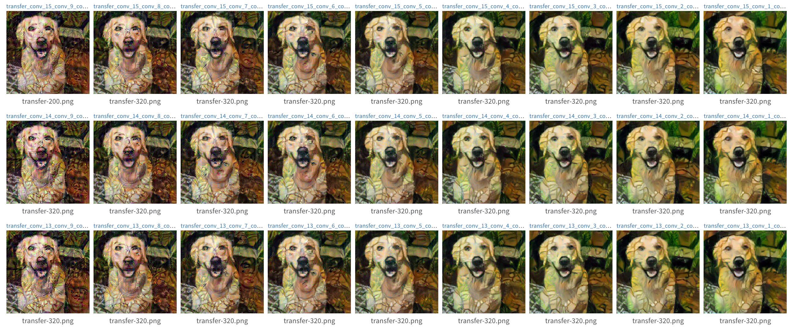Transfer, content layer from 15-13 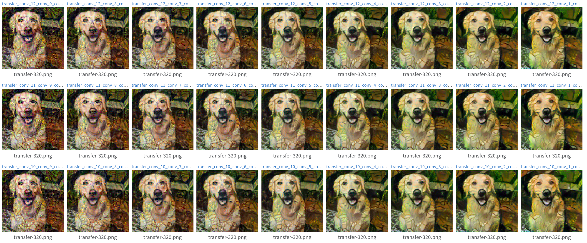Transfer, content layer from 12-10 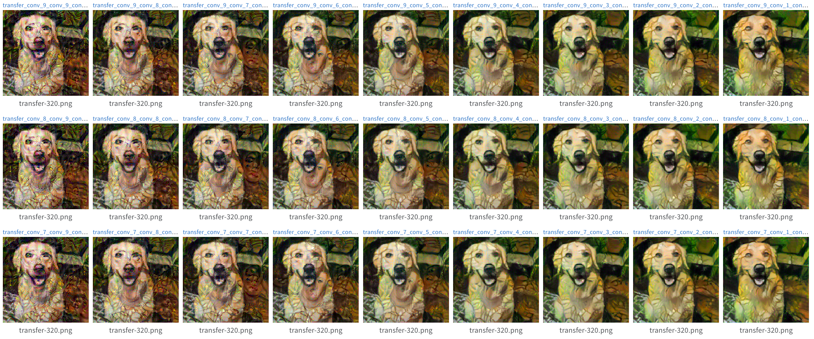Transfer, content layer from 9-7 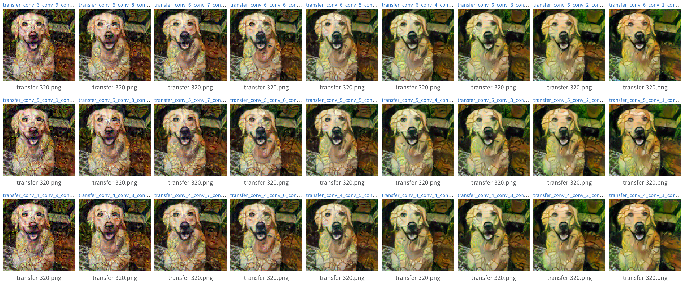Transfer, content layer from 6-4 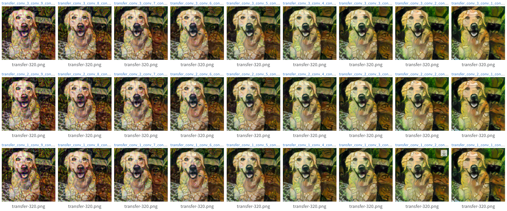Transfer, content layer from 3-1 Gram Matrix Implementation: The Gram matrix is a crucial component in style transfer, as it helps capture and quantify the style of an image. It works by computing the correlation between different feature maps in a given layer of a neural network, thus providing a representation of the style information contained in that layer.

Gram Matrix, source from cloudxlab.com Image Grid: We generated a grid of images, showcasing the results of style transfer with two content images mixed with two style images. The grid also includes the original content and style images.
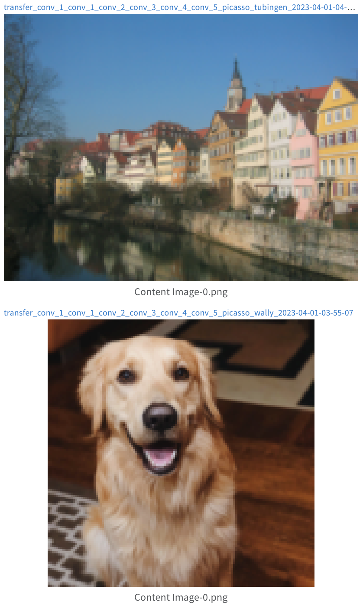Content Images 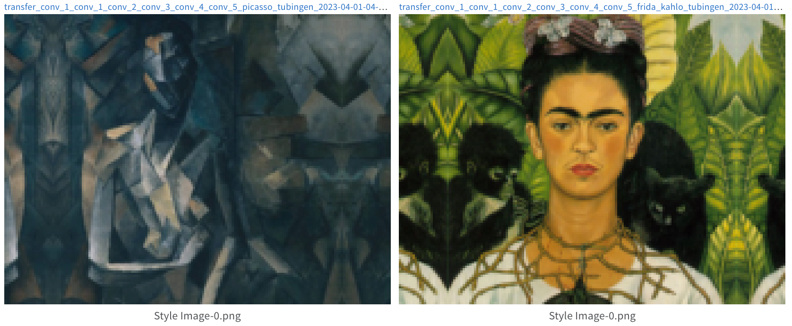Style Images 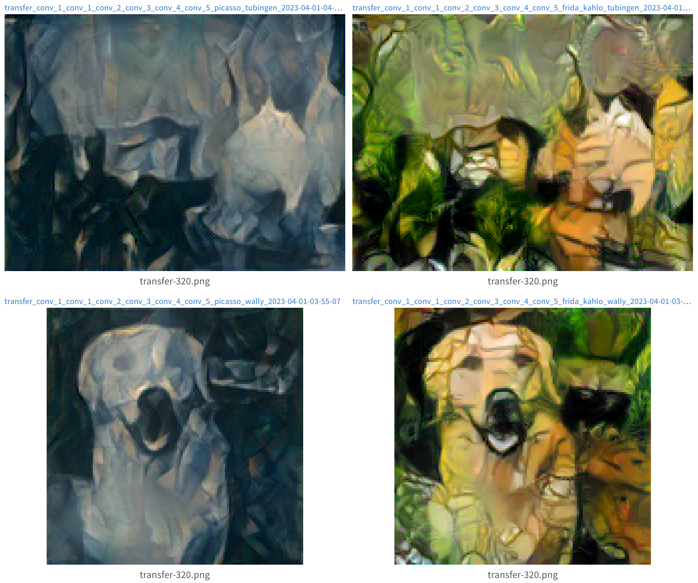Style Transfer: Mixed 2 By 2 Style Transfer on My Favorite Image: We applied style transfer to some of our favorite images and observed the results.
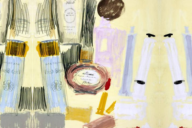Style: Untitled (Beauty Products) by Andy Warhol Content: Laguna Beach by Linji Wang 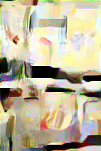Andy Warhol Styled Laguna Beach 
Style Transfer Process
Conclusion
In conclusion, this project has successfully demonstrated the implementation of neural style transfer using content and style losses. The assignment began with content reconstruction, where the content loss was calculated as the squared L2-distance between the features of the input and content images at a certain layer. Different layers were evaluated for their effect on content optimization, and the results were analyzed and presented.
The second part of the assignment focused on texture synthesis using style loss, which was computed based on the Gram matrices of the input and style images. The effect of optimizing texture loss at different layers was explored, and synthesized textures were generated and compared.
Finally, both content and style losses were integrated to perform neural style transfer. Hyperparameters were tuned, and a 3x3 grid of results, including content and style images, was generated. The quality and running time of the style transfer were compared when using random noise and a content image as input. Furthermore, the style transfer technique was applied to a variety of favorite images, showcasing its versatility.
Overall, this project has deepened the understanding of neural style transfer, optimization of pixel values, and the role of content and style losses in producing visually appealing and artistic results. The experiments carried out and the results obtained provide valuable insights into the workings of neural style transfer and its potential applications in the creative domain.